| Consent form | For explaining the procedure, risks, and benefits to the patient and getting their permission to proceed. | |
| Timeout Sheet | A checklist for doing timout. | |
| Chucks pad | 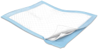 | Put this under the patient's arm in case of bleeding. |
| Derm Marker | 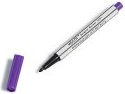 | For marking the removal site. |
| Alcohol Prep Pads x 2 | 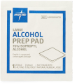 | For cleaning off any blood after the procedure. |
| Chloraprep | 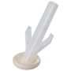 | For cleaning the skin prior to cutting. |
| Lidocaine 1-2% with or without epinephrine (5 mL) | 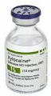 | For numbing up the arm. With epinephrine is preferred. |
| 5 mL Syringe | 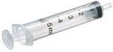 | For injecting lidocaine. |
| 18 gauge needle | 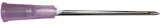 | For drawing up lidocaine into the syringe. Do not let the patient see this needle. |
| 25 to 27.5 gauge needle | 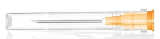 | A small and friendly needle for injecting lidocaine. |
| Sterile Gloves | 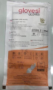 | Get the appropriate size for the provider AND the technician (in case the tech needs to help out). |
| #11 Blade | For cutting the skin and freeing the nexplanon. | |
| x3 Sterile Gauze, 2" x 2" | 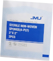 | For bandaging the wound, holding pressure, and cleaning the wound. |
| Curved Hemostat | 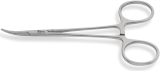 | For grasping hold of the nexplanon. If a curved version is not available, a straight will do. |
| Steri-Strips | 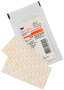 | For cutting steri-strips prior to application. Cut in half, hamburger style. |
| Trauma Shears | For cutting the steri-strips. | |
| Coban | 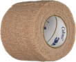 | For applying the pressure dressing at the end. |